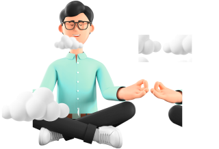
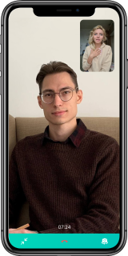

Психологи работающие с актуальными темами
- Чувства
- Одиночество
- Вредные привычки
- Отношения
- Работа
- Смыслы
- Одиночество
- Одиночество
- Отношения с близкими
- + 300 психологов
Поможем вам
- Разрешить причины сложных отношений с партнером
- Снять или снизить остроту переживаний
- Справиться с выгоранием на работе и найти мотивацию
- Понять себя в отношениях с близкими людьми
- Найти себя и понимать свои желания
- Исследовать и управлять изменениями в своей жизни

Преимущества онлайн сессий с психологом
Занимайтесь где и как удобно
Дома или в поездке и в любом часовом поясе
Меньше забот- больше мотивации
Не тратьте время на дорогу и управляйте занятиями в два клика
Доверяйте себе
Выбирайте среди проверенных психологов, которые специаллизируются на ваших запросах
Как мы отбираем специалистов?
Отбор проходят меньше 10% специаллистов
Документы об образовании
Обязательно иметь высшее психологическое образование и сертификаты для ведения психотерапии
Опыт частной практики и личной терапии
Нужно не менее 3-х лет частной практики, личная терапия и регулярные супервизии
Собеседование с нашим экспертом-ментором
Отслеживаются коммуникативные способности, уровень эмпатии, манера и стиль беседы, проффесиональные компетенции
О сервисе
- 900+
регистраций вчера - 700+
проведено сессий - 354+
психологов
Подбор “По позже”
Подбор с возможностью бронирование сессии на будущее
Подбор “Сейчас”
Подбор с возможностью начала сессии “здесь и сейчас”
Как это устроено
Заполните простую анкету
Расскажите, что вас беспокоит и что важно в психологе.
Выберите способ связи с психологом
49руб/мин по аудио/видео связи
200руб за 24 часа чата + аудио сообщения
Выберите психолога
Выберите понравившегося психолога
Начните общение
Все общение происходит через платформу SPEAK. Вслучае если психолог вам не понравится, вы можете заменить его без дополнительных переплат
Заполните простую анкету
Расскажите, что вас беспокоит и что важно в психологе.
Выберите психолога
Выберите понравившегося психолога
Выберите способ связи с психологом
49руб/мин по аудио/видео связи 200руб за 24 часа чата + аудио сообщения
Начните общение
Все общение происходит через платформу SPEAK. Вслучае если психолог вам не понравится, вы можете заменить его без дополнительных переплат
Отзывы
Детский психолог онлайн
Чем поможет детский психолог онлайн?
Каждый родитель хочет, чтобы его ребенок рос сильной уравновешенной личностью. Мы понимаем, что именно в детстве формируются зачатки характера. Как справиться с возникающими проблемами, как выстроить отношения с ребенком, чтобы он доверял вам? На эти и другие вопросы поможет ответить детский психолог онлайн.
Преимущества онлайн-консультации детского психолога
Главный плюс сеанса в таком формате – экономия времени. Вам не придется тратить время на дорогу и долгие сборы. Все, что нужно – компьютер или смартфон, микрофон и блокнот с ручкой, чтобы записывать важную информацию. Если вам или ребенку тяжело общаться с незнакомым человеком лично, онлайн-связь в этом случае упростит дело.
Когда нужна помощь детского психолога онлайн?
Онлайн-консультация детского психолога может быть полезна, если у вас есть вопросы по таким темам, как:
- Плохая успеваемость;
- Стеснительность;
- Цифровая зависимость;
- Агрессия;
- Потеря близкого в семье;
- Возрастной кризис;
- Подготовка к детскому саду или школе;
- Профориентация.
Это лишь часть тем, которые можно затронуть. Помните, что, если возникает ситуация, в которой вы самостоятельно не можете разобраться, сейчас консультация детского психолога онлайн поможет найти ответы.
Как проходит онлайн-консультация детского психолога?
Задать вопрос детскому психологу онлайн может как сам ребенок, так и родитель. На первом сеансе обычно присутствует родитель или опекун, а также сам «виновник торжества». Следующие сеансы могут быть и без взрослого, если ребенок сам в состоянии связаться через интернет.
Бывает и так, что сначала ребенку присутствовать необязательно. В этом случае работа происходит с родителем, а если есть необходимость, позже присоединяется ребенок.
Психолог по детским вопросам онлайн может попросить ребенка нарисовать что-то, далее по этим рисункам он проведет диагностику. Родитель тоже является звеном связи с психикой ребенка. Через него психолог может сделать вывод о том, какая проблема сейчас назрела.
Если специалист попросит вас пройти обследование или сдать анализы для более ясной картины, не пугайтесь, это нормально. Таким образом, вы оба сможете исключить какие-либо диагнозы
О чем поговорить с детским психологом?
Родители малышей часто обращаются с вопросами об адаптации в детском саду. Есть тревожные мамы, которые сомневаются, стоит ли отдавать малыша в сад или же пока слишком рано. Очень многих волнует, что воспитатель будет срываться на ребенка. Это логично, ведь в силу того, что в СМИ регулярно появляются жуткие новости о чудовищных ЧП в детсадах, беспокойство обосновано.
Отдельный вопрос подготовки к саду. В интернете полно информации в таком ключе: «ребенок должен научиться самостоятельно есть, ходить в туалет и засыпать сам перед тем, как идти в сад». Особо мнительные беспрекословно верят, другие понимают: ребенок ничего никому не должен. Его невозможно научить чему-то, пока он сам не захочет делать это. «Дрессировке» малыши не поддаются. Но пугаться не стоит, в любом случае, воспитатели будут помогать малышам в этих вопросах. Главное – настроиться на позитив и верить в хорошее.
Дети постарше сталкиваются с проблемами переходного возраста, неуверенностью в себе, безответной любовью и другими. Если вы понимаете, что вам с чадом необходима онлайн-консультация, вы можете выбрать специалиста на нашем сайте.